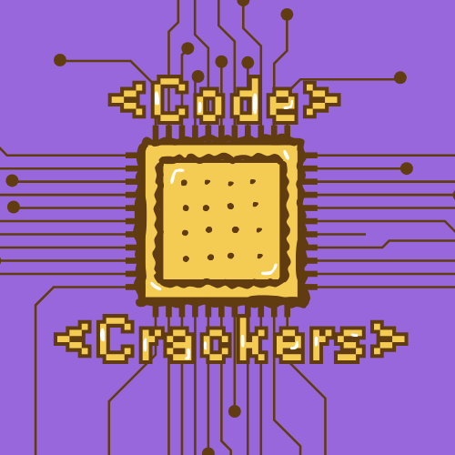

Multidisciplinary creative · Bologna, Italy
Colourful ideas,
grown between
music & nature.
I work across graphic design, illustration and visual identity, creating playful visual worlds for independent culture.
Exploremy work↓
Selected work · 2024—2026
Things I’ve
been making.

Code Crackers
A playful visual experiment mixing technology, food and retro-game aesthetics.
Web design · Digital humanities
Ideas that live
on the web.
Alongside my visual practice, I design and build academic digital projects that connect cultural heritage, storytelling and interactive web experiences.
Web design · Interactive map
Lima Live Cinema Museum
A digital museum that turns movie locations into an explorable cultural experience through an interactive map, responsive interfaces and location-based storytelling.
Cultural heritage · Linked Open Data
Benozzo Gozzoli Knowledge Graph
A collaborative academic project that represents and enriches information about the Renaissance painter through RDF, SPARQL and a public-facing website.
Information architecture · LODLAM
God of War: A Linked Open Data Model
An individual project transforming a cultural source into an interactive article, entity explorer and RDF knowledge representation.
About Alice
Designing with
curiosity and care.
I’m Alice, a multidisciplinary creative with a background in communication, music culture and digital humanities.
My practice moves between graphic design, illustration and visual identity. Music is both a lifelong passion and part of my professional experience: I create posters and communication materials for concerts and cultural events in Bologna. Nature often enters my work through organic forms, characters, colour and observational drawing.
Puntolineare is the nickname I use for my personal illustration practice — a space for experimentation, visual notes and things made simply because they spark curiosity.
Have a project, a gig or an idea?
Let’s make
something alive.
Email address to be updated before publishing.